In this post I will share 50+ photo prompts specially crafted for boys.
Viral Scorpio Car Prompt
Want more awesome prompts?
Join our community and get the latest viral prompts daily.
Follow on Instagram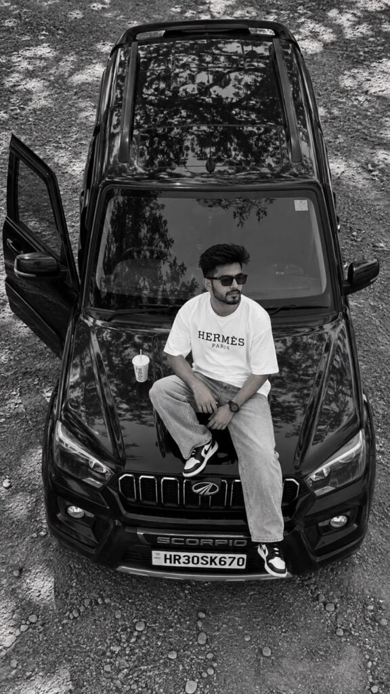
? AI PROMPT
A young stylish Indian man sitting on the bonnet of a black Mahindra Scorpio SUV,
top-down aerial drone view, black and white photography,
Details:
Wearing white oversized t-shirt with text "HERMES PARIS"
Light baggy jeans, black and white sneakers
- Black sunglasses, messy hair, beard
Car door open on left side
White cold drink cup on bonnet
Car number plate: HR30SK670
- Tree shadows reflecting on car roof
Gravel ground background
Style: cinematic, moody, ultra realistic, highly detailed, 8k Aspect Ratio: 9:16 Filter: Black and white
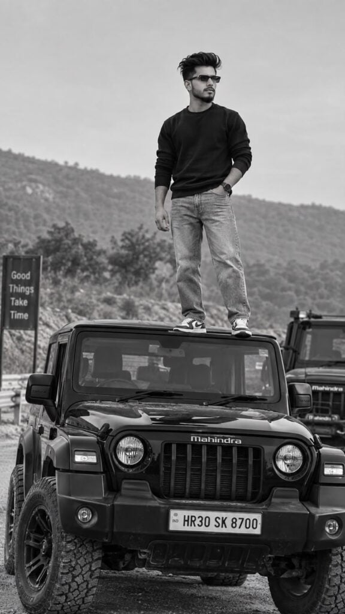
? AI PROMPT
A cinematic, photorealistic, black and white editorial photograph of a stylish young man with curly hair, beard and mustache, wearing black sunglasses, standing confidently on the roof of a black Mahindra Thar SUV, looking towards the right side (off-camera) with the same head angle and gaze as the reference, maintaining a
cool and composed attitude. He is wearing a dark, full-sleeve crewneck sweater, relaxed straight-fit jeans, and sneakers. His left hand is casually placed in his jeans pocket, while his right hand hangs naturally by his side, matching the pose from the reference image. The shot is taken from a slightly low angle, capturing the full front of the Thar with its rugged details, large wheels, and visible number plate (HR30 SK 8700), with another Mahindra vehicle partially visible behnd on the right side. The setting is an outdooe
roadside environment with trras in the þaakįwurd, a taul atclear sanat aal in mochopoue tones. Natural daylght creates sof, even iignng
lighting with gentle contract, emphsizing texxures in the clothing, vehicle and surroundings. The subject is positioned slighty right of center, occipying the midle-to-usper porton of the frame, with the Jeep dominating the liey portion, creating a bold, powerful, and moody automotive portrait. Shot with a DSLR / mirrorless camera, 85mm lens, f/2.8, shallow depth of field, cinematic composition, high detail, realistic textures and contrast, ultra detailed, photorealistic, premium editorial photography.
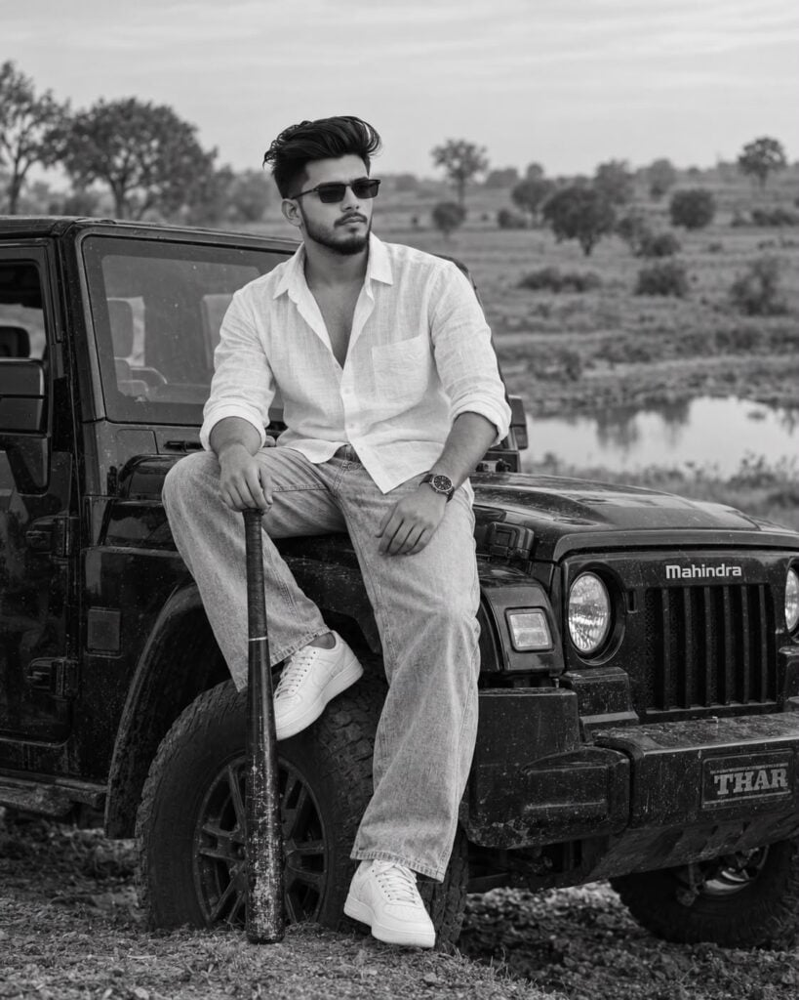
? AI PROMPT
A cinematic, black and white, outdoor portrait of a stylish young man sitting on the front fender of a black Thar SUV in a rural landscape, captured in a natural, candid moment with a relaxed and confident attitude. The subject is facing towards the left, looking off into the distance, wearing dark sunglasses, a crisp white linen shirt with a few buttons open, light-wash relaxed-fit jeans, and white sneekers. His curly hair and trimmed beard add character, with a calm, thoughtful expression. One hand rests on a baseball bat held vertically, while the other hand is placed on his thigh, matching the original pose. The scene is set in an open, dry field with scartered trees and a small pond in the background, shot in natural dayalight with soft contrast, giving a timeless monochrome aesthetic. The composittion uses a mid-shot from a slightly lower angle, creating a strong, masculine, fashion-editorial vibe. Sharp focus on the subject with detailed textures in clothing, hair, and the vehicle, natural depth of field, film-like tonality, subtle grain, and high dynamic range. Shot on a DSLR with an 85mm lens, f/2.0 aperture, ISO 100, capturing authentic shadows, highlights, and fine details, ultra detailed, photorealistic, premium editorial photography.
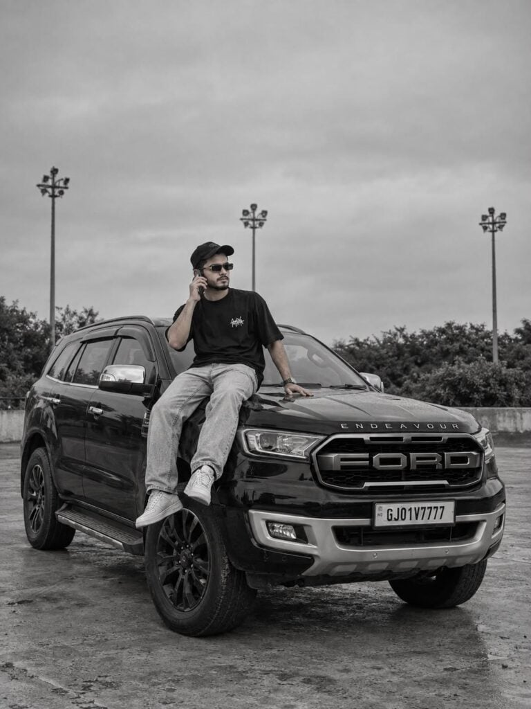
? AI PROMPT
Black and white photorealistic photo of a young South Asian man in his mid-20s sitting on the hood of a black Ford Endeavour SUV, front 3/4 low-angle view, the man has medium-length wavy hair, wearing a black baseball cap, black sunglasses, black oversized graphic t-shirt with small white graphic on chest, light acid-wash baggy jeans, white sneakers, right hand holding a phone to his ear and left hand resting on the hood, legs hanging over the front fender near the headlight, relaxed candid pose smiling and looking to the side, the SUV has bold FORD lettering on the grille, silver front bumper, chrome side mirrors, black alloy wheels, slightly dirty body, parked on a concrete open lot, background with 3 tall light poles, small bushes and blurred greenery, overcast soft natural daylight, high detail skin texture, DSLR shot on 35mm lens, shallow depth of field, high contrast black and white film filter, slight film grain and dark vignette around the edges, ultra realistic, 4k --ar 3:4, and 100% my face same, and The camera is far away from the car and the man is clicking the picture from a distance, this picture is clear don't blur, and man wearing small rectangular gold-rimmed black sunglasses, don't change my face,
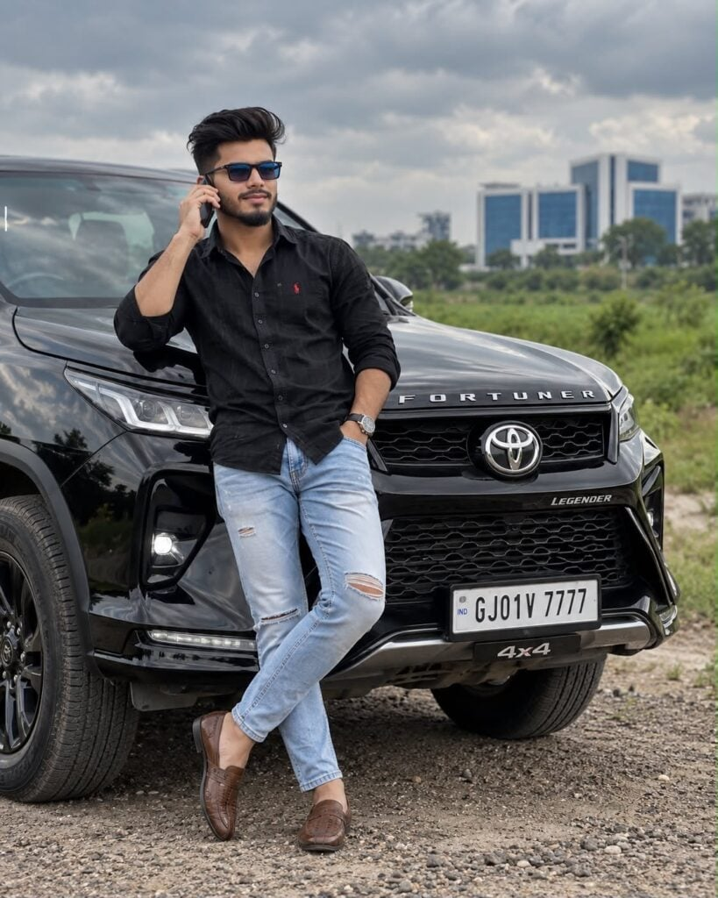
? AI PROMPT
A young stylish Indian man in his 20s, short faded curly hair, trimmed beard, wearing black sunglasses with blue tint, black full sleeve shirt with small red logo, light blue ripped skinny jeans, brown Kolhapuri style loafers, leaning stylishly on front fender of a glossy black Toyota Fortuner Legender 4x4
SUV, number plate",
', one hand on
phone call near ear smiling, other hand in pocket, legs crossed, confident billionaire pose, open ground with green fields and modern blue-white building blurred in background, overcast moody cinematic sky, ultra photorealistic, 8k, DSLR shot --ar 4:5 --style raw
1,060
12.1K
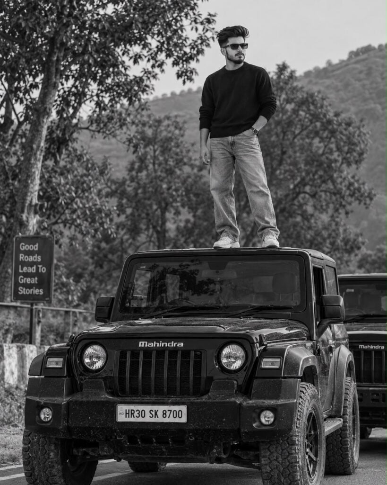
? AI PROMPT
A cinematic, photorealistic, black and white editorial photograph of a stylish young man with curly hair, beard and mustache, wearing black sunglasses, standing confidently on the roof of a black Mahindra Thar SUV, looking towards the right side (off-camera) with the same head angle and gaze as the reference, maintaining a cool and composed attitude. He is wearing a dark, full-sleeve crewneck sweater, relaxed straight-fit jeans, and sneakers. His left hand is casually placed in his jeans pocket, while his right hand hangs naturally by his side, matching the pose from the reference image. The shot is taken from a slightly low angle, capturing the full front of the Thar with its rugged details, large wheels, and visible number plate (HR30 SK 8700), with another Mahindra vehicle partially visible behnd on the right side. The setting is an outdooe roadside environment with treas in the baakimud, autal atclear senar. aal in mochopoue tones. Natural daylght creates sof, even ligune lighting with gentle contract, emphsizing texxures in the clothing, vehicle and surroundings. The subject is positioned slighty right of center, occupying the midle-to-uper porton of the frame, with the Jeep dominating the liey portion, creating a bold, powerful, and moody automotive portrait. Shot with a DSLR / mirrorless camera, 85mm lens, f/2.8, shallow depth of field, cinematic composition, high detail, realistic textures and contrast, ultra detailed, photorealistic, premium editorial photography.
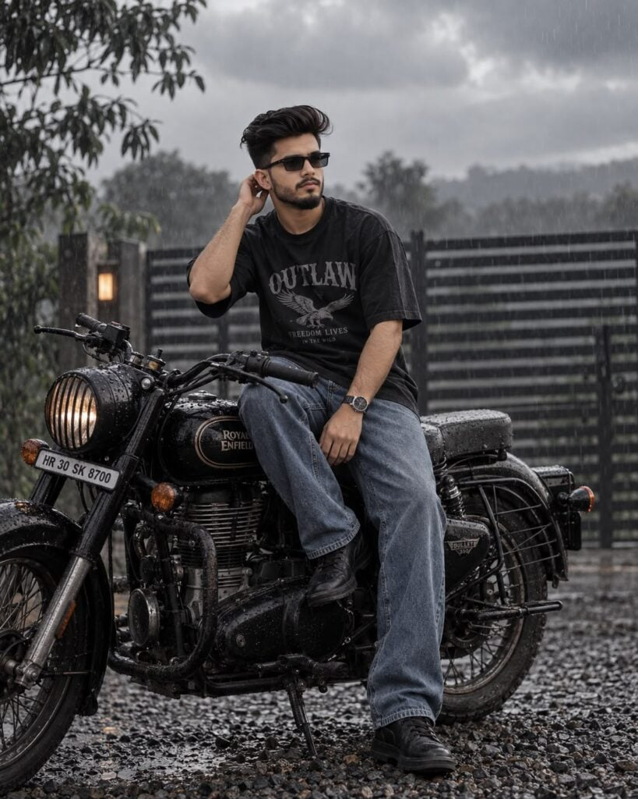
? AI PROMPT
A moody, cinematic, ultra-realistic photograph of a young man with curly hair and sunglasses sitting on a black retro motorcycle during a rainy, overcast day. The man is seated sideways on the bike, looking away towards the background with his head slightly turned to the right, one hand raised towards his ear/hair, replicating a casual, candid pose. He wears a dark oversized graphic t-shirt, blue jeans, and dark footwear. The motorcycle is a classic/retro style with a round headlight, vivible engine details, and wet surfaces with raindrops, parked on a gravel ground. The background includes a horizontal slatted gate/fence, soft greneiry, and a grey cloudy sky. Subtle rain falls throughout the scene, creating a moody, melancholic atmosphere. Shot from a low-to-mid angle, natural diffused lighting, muted desautated colors, high contrast, shallow depth of field, cinematic film tone, realistic textures, wet reflections, detailed and professional photography, 35mm lens, f/2.8, ISO 100, shutter 1/250s, ultra detailed, photorealistic, premium editorial photography.
1)
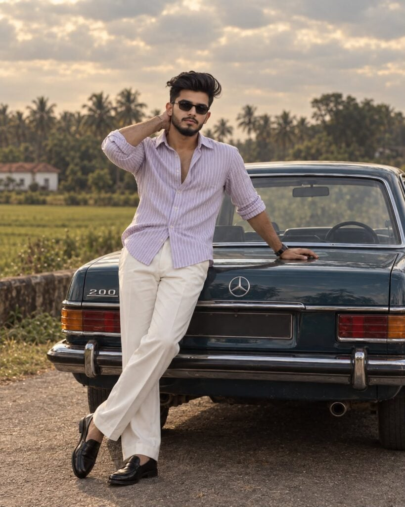
? AI PROMPT
Create an ultra-realistic cinematic professional photograph, exactly 1080×1350 pixels, strict 4:5 vertical composition. A stylish young South Asian/Indian man with thick naturally curly black hair, neatly groomed beard and moustache, wearing dark rectangular sunglasses, a light lavender-and-white striped linen button-up shirt with sleeves rolled up and top buttons open, Loose white trousers and black formal loaters. He is casually leaning against the rear of a classic vintage teal-blue Mercedes Benz 200 sedan, one hand resting behind his neck and the other placed naturally on the car, with one leg crossed over the other. He faces the camera with a relaxed, confident smile and effortles.
lashion-model attitude.
The vintage Merc
edes features detailed
chrome bumpers
ic tail lights, realistic
metallic reflections and authentic retro styling. Set on a quiet ural Indian road
beside lush green tields and distant palm trees, beneath a dramatic cloudy sky. Warm soft natural light, cinematic shallow depth of field, realistic skin pores, detailed curly hair, natural body proportions, authentic fabric folds, subtle warm vintage color grading, slightly muted nostalgic tones, gentle film grain, atmospheric depth, premium Indian fashion editorial photography, highly photorealistic, 8K-quality detail.
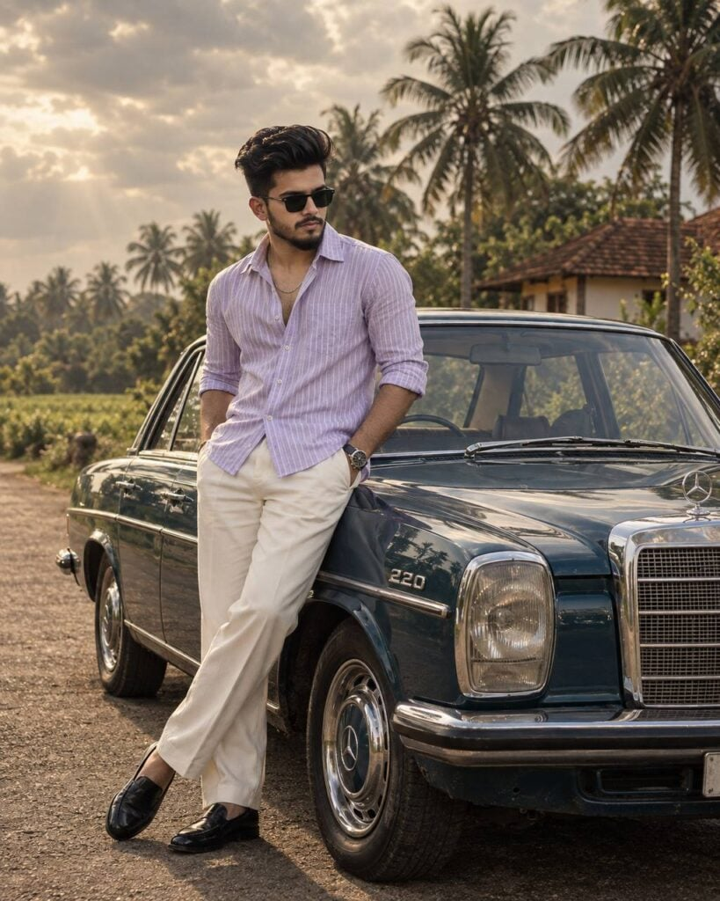
? AI PROMPT
| Create an ultra-realistic cinematic professional photograph, exactly 1080×1350 pixels, strict 4:5 vertical composition. A stylish young South Asian/Indian man with thick naturally curly black hair, neatly groomed beard and moustache, wearing dark rectangular sunglasses, a light lavender vertically striped linen shirt with sleeves rolled up and top buttons open, loose cream-white trousers, black formal loafers, a wristwatch and subtle chain necklace. He is casually leaning against a vintage dark teal-blue Mercedes-Benz 220 classic sedan, both hands in his trouser pockets, legs crossed naturally, head slightly tilted downward while looking to the side with a confident relaxed expression. Rural Indian countryside road, lush coconut palm trees and greenery in the background, traditional house with a red tiled roof, dramatic cloudy beige sky. Warm muted late-afternoon lighting, soft cinematic haze, realistic reflections and chrome details, natural skin texture, detailed fabric folds, shallow depth of field, vintage film grain, warm earthy color grading, luxury retro fashion editorial aesthetic, photorealistic, cinematic dynamic range. No text, no watermark.
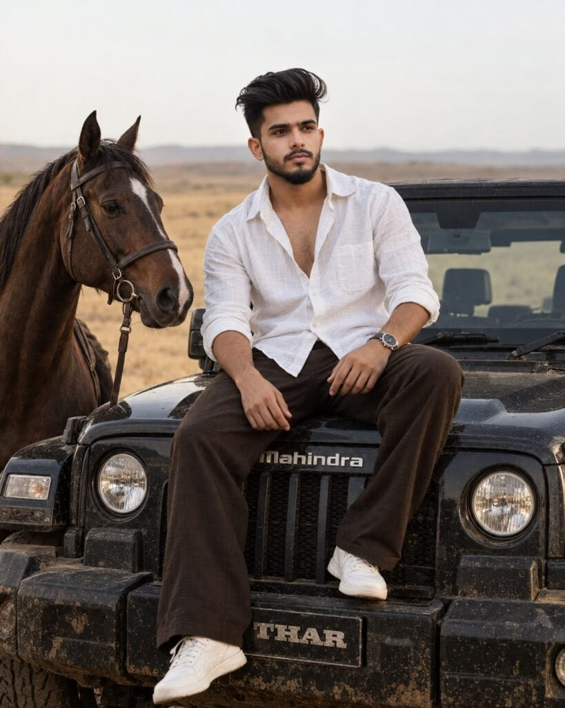
? AI PROMPT
Create an ultra-realistic cinematic professional DSLR photograph,
exactly 1080×1350 pixels, strict 4:5 vertical composition.
A stylish young South Asian/Indian man sitting confidently on the hood
of a black Mahindra Thar, parked in a vast dry golden desert/savanna
field. He has thick naturally curly messy black hair, warm-medium
Indian skin tone, defined jawline, subtle beard and moustache, and a
calm confident expression while looking toward the left. Preserve the
reference face accurately with n[atura]l facial proportions.
He is wearing a white sh[irt, un]buttoned/oversized lin[en, ope]n at
the chest with rolle[d up sleev]es, dark brown loose [trousers/pants],
[a cl]assic wristwat[ch]. [His] h[a]nds should l[ook natural/pers]onate.
[A dar]k brown [h]orse[stands beside] him, w[e]aring a [bridle]. [Th]e
[Mahin]dr[a] Thar['s b]ody [is] detailed [with]... du[s]ty rural
[backdro]p [wit]h, natural [skin] texture, [detailed hair textu]re,
shallow [depth of field, DSLR phot]ography, [premium fashion editorial
q]uality, no [disto]rtion.
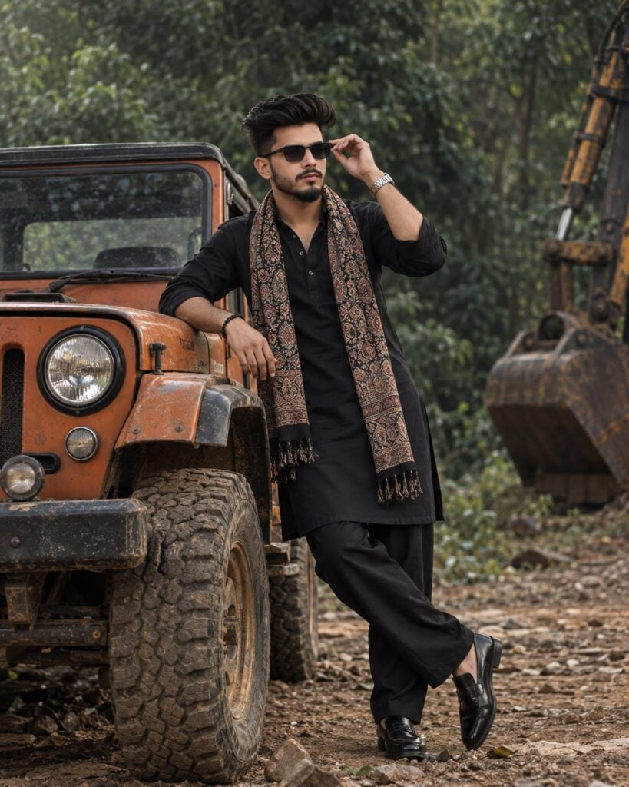
? AI PROMPT
Create an ultra-realistic cinematic professional photograph, exactly
1080×1350 pixels, strict 4:5 vertical composition. A stylish young
South Asian/Indian man with thick naturally curly black hair, neatly
groomed beard and mou[stache, w]arm-medium skin tone, and dark
rectangular sunglass[es standing] confidently beside a vintage
orange-brow[n] [off-r]oad Jeep.
He is wearing a premium blac[k tr]aditi[onal ku]rta with matching
loose black trousers, polish[ed] bla[ck shoe]s, a stylish wristwatch
and bracelet, [and a tra]ditional printed scarf with intricat[e
patterns] draped around his neck. His pose i[s with one] hand casually
adjusting his sungl[asses and the other resting] on the Jeep, legs
crossed sli[ghtly a]t [the ankles], and subtle smi[le, lo]oking [off to
the side].
The Jeep is prominently v[is]ibl[e with] road tires, roun[d headlights,
a] weathered pai[nt finish]. [The background] features a dense lush
g[reen jungle backdrop with a] large excavator/industrial me[chanical
element partly visible].
Moody cinematic [lighting, deep] shadows, subtle rim l[ight, detailed
hair] strands, authentic fa[cial features, polished] leather shoes,
highly [detailed textures], soft background bo[keh,] muted color
grad[ing], vintage film grain, pr[emium D]SLR photography, a[uthentic]
look, high dynamic r[ange, prem]ium Indian fashion e[ditorial]
aesth[etic, p]hotorealistic.
Negative prompt: No [text, no] UI, no text, no watermark, no extra
people, no distorted face, no deformed hands, no extra fingers, no
unnatural body proportions, no plastic skin, no cartoon look, no
excessive HDR.
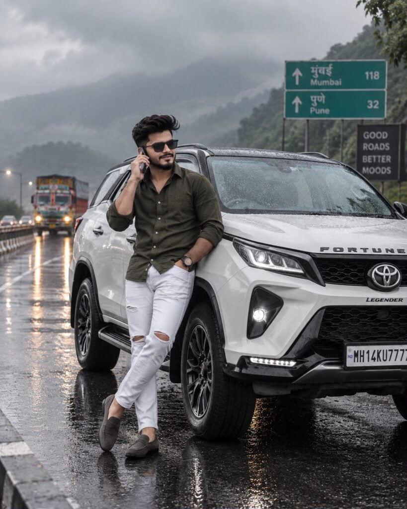
? AI PROMPT
Create an ultra-realistic cinematic DSLR photograph, strict 4:5 vertical composition.
A stylish young Indian man in his 20s with modern voluminous dark hair, neatly trimmed beard and moustache, wearing black rectangular sunglasses, an olive-green full-sleeve button-up shirt with sleeves slightly rolled, white ripped jeans, grey-brown loafers without socks, and a black wristwatch.
He is casually leaning against the front-side fender of a glossy pearl-white Toyota Fortuner Legender 4x4 SUV. He is talking on a smartphone held near his ear with one hand, while his other hand rests casually inside his jeans pocket. His legs are naturally crossed, creating a relaxed and confident luxury-lifestyle pose.
IMPORTANT CAMERA ANGLE:
Use a dramatic three-quarter front-side angle from slightly low camera height, positioned toward the SUV's front-left side. Show the man's full body while also prominently capturing the SUV's front grille, headlamp, wheel, hood, and side profile. The vehicle should appear large and powerful in the foreground. Do NOT use a straight-on front portrait angle.
Set the scene on a wet mountain highway during the monsoon. Glossy rain-soaked asphalt with realistic reflections, gentle rainfall, water droplets covering the SUV, misty green mountains and dense greenery in the distance. A colorful Indian truck should appear blurred in the background with soft headlights and cinematic bokeh.
Add a blurred green highway direction sign in the background, atmospheric fog, overcast dark-grey clouds, subtle roadside lights, and natural rainy-weather ambience.
Lighting: cinematic moody monsoon lighting, soft diffused daylight, realistic highlights on wet surfaces, subtle contrast, natural skin texture, shallow depth of field.
Photography: professional full-frame DSLR, 50mm lens, realistic perspective, detailed textures, natural proportions, sharp subject, creamy background bokeh, premium automotive editorial photography, ultra photorealistic, high detail, realistic colors, Instagram viral portrait aesthetic.
No cartoon effect, no illustration, no excessive HDR, no distorted hands, no extra fingers, no deformed face, no unnatural body proportions.
--ar 4:5 --style raw